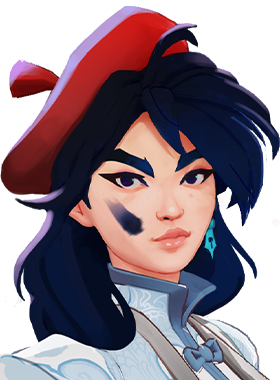
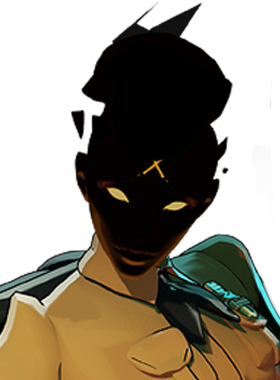
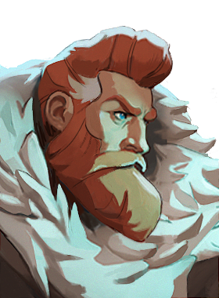

Lutador escrachado e real, um rato gigante de coroa.
História
O governante enigmático dos Warrens de Nova York, o Rei Rato eleva-se sobre seus súditos em tamanho, força e ambição. Não mais satisfeito em se esconder no subsolo, o rei revelou sua visão ousada para um futuro onde ele e seus súditos possam caminhar pela superfície sem medo das vans de controle de pragas que percorrem as ruas de Nova York (ou como os ratos as chamam: esquadrões da morte humanos).
Passo 1: Assuma o controle de Long Island
Passo 2: Declarar Long Island como a nova nação soberana de Ratannia
Passo 3: Execute todos os humanos que se recusam a deixar esta nova utopia dos ratos
Mas por mais rígido que seja esse plano, o rei dos ratos não quis correr riscos: e então decidiu convocar o patrono para ajudar a proteger suas apostas.
História oficial do jogo, traduzida automaticamente para o português.
Números reais
Habilidades
Lança uma granada de sucata que detona várias vezes, causando dano de bala e retardando inimigos.
Invoca ratos que grudam nos inimigos, causando dano espiritual contínuo e reduzindo a resistência a balas a cada mordida.
Veste armadura para ganhar uma barreira baseada na vida máxima, podendo rebater balas de volta aos atacantes.
Finca um estandarte que dá velocidade, imunidade a lentidão e redução de dano a aliados próximos, e depois uma pancada fere, lança ao ar e retarda inimigos na área.
Builds mais usadas
13.246 partidas registradas com esta build.
🏆 Rodadas de alta velocidade (800) · 🏆 Regeneração Extra (800) · 🏆 Rodadas de Abertura (1.600) · 🏆 Revista Estendida (800) · 🏆 Colete de Batalha (1.600) · 🏆 Botas de corrida (800) · 🏆 Pé Ligeiro (1.600) · 🏆 Sacrifício de Cultista (3.200) · 🏆 Saúde Extra (800) · 🏆 Velocidade duradoura (1.600)
9.724 partidas registradas com esta build.
Perto (800) · Rodadas Monstruosas (800) · Botas de corrida (800) · Rodadas de alta velocidade (800) · Saúde Extra (800) · Sacrifício de Cultista (3.200) · Revista Estendida (800) · Rodadas rápidas (800) · Atacante Rápido (1.600) · Pé Ligeiro (1.600)
8.728 partidas registradas com esta build.
Rodadas Monstruosas (800) · Rodadas de alta velocidade (800) · Saúde Extra (800) · Revista Estendida (800) · Sacrifício de Cultista (3.200) · Atacante Rápido (1.600) · Velocidade duradoura (1.600) · Fortaleza (3.200) · Pé Ligeiro (1.600) · Regeneração Extra (800)
Confrontos reais
 Deadman Danny — 63.9% de vitória
Deadman Danny — 63.9% de vitória Mirage — 63.5% de vitória
Mirage — 63.5% de vitória The Doorman — 62.8% de vitória
The Doorman — 62.8% de vitória Pocket — 62.7% de vitória
Pocket — 62.7% de vitória- Solomon — 62.3% de vitória

Violet — 62.3% de vitória
 Paige — 51.0% de vitória
Paige — 51.0% de vitória Victor — 51.7% de vitória
Victor — 51.7% de vitória
Haze — 52.5% de vitória Graves — 52.6% de vitória
Graves — 52.6% de vitória Seven — 52.7% de vitória
Seven — 52.7% de vitória
Kelvin — 53.4% de vitória